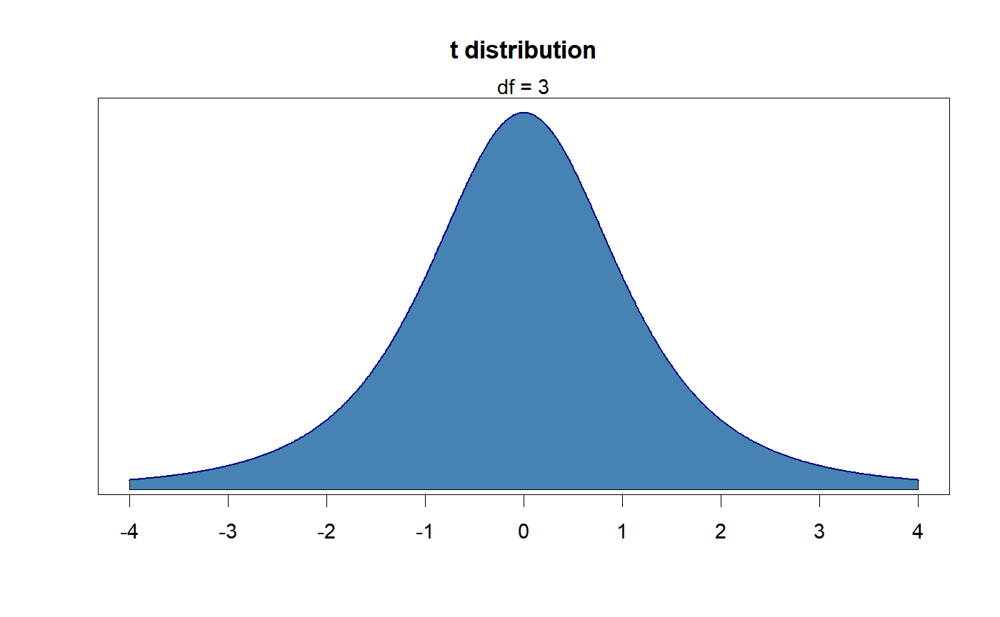
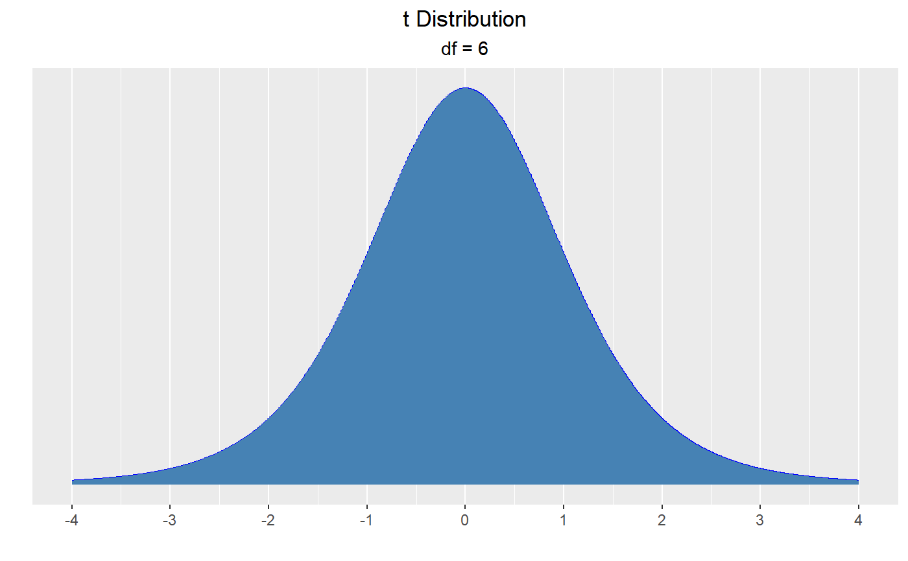
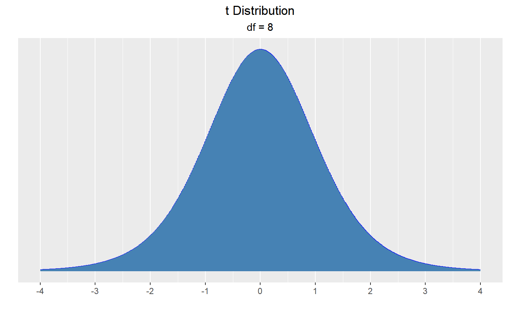
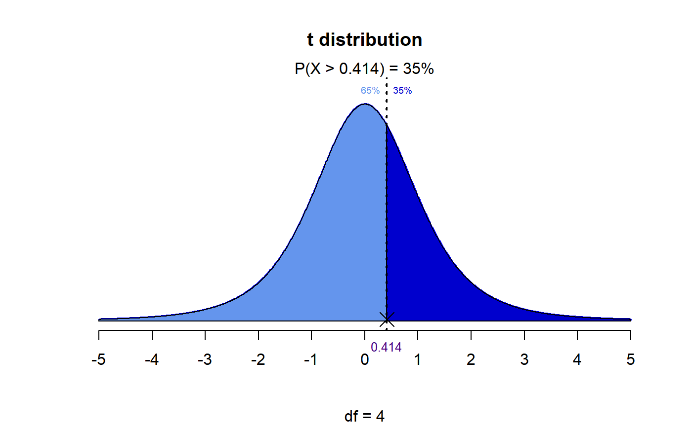
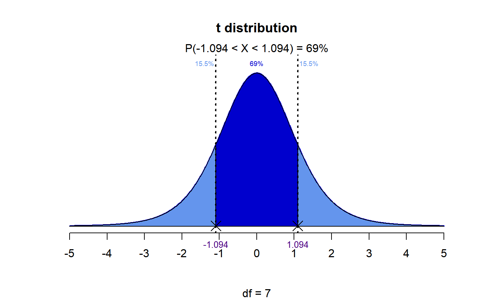
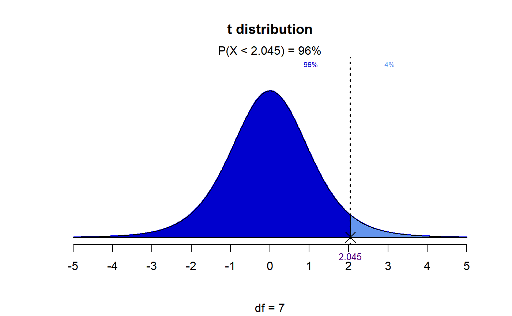
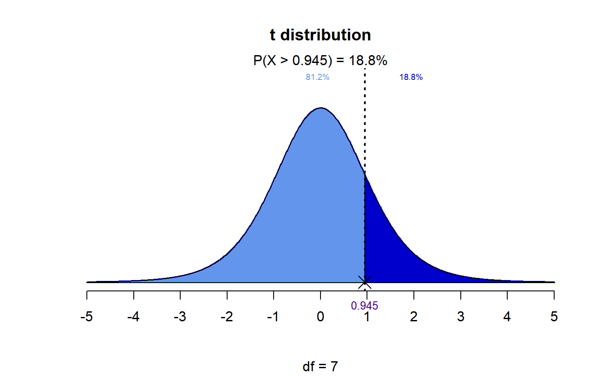
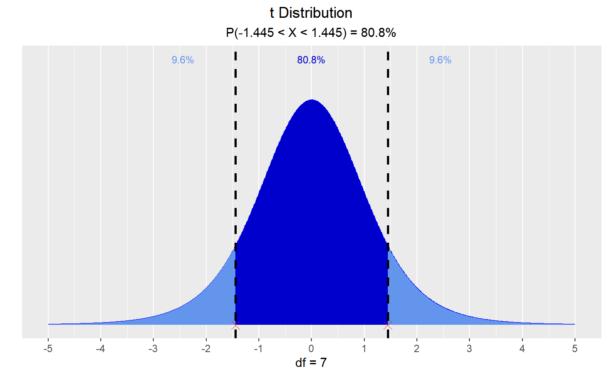

Visualize how degrees of freedom affect the shape of t distribution, visualize quantiles out of given probability and probability from a given quantile.
dist_t_plot(df = 3) dist_t_perc(probs = 0.95, df = 4, type = c("lower", "upper", "both")) dist_t_prob(perc, df, type = c("lower", "upper", "interval", "both"))
Arguments
| df | Degrees of freedom. |
|---|---|
| probs | Probability value. |
| type | Lower tail, upper tail, interval or both. |
| perc | Quantile value. |
Value
Percentile for the probs based on df and
type or probability value for the perc based on df and
type.
See also
Examples
# visualize t distribution dist_t_plot()#> Warning: `dist_t_plot()` has been soft deprecated and will be removed in the next version of descriptr. Please use the vistributions package for visualizing probability distributions.dist_t_plot(6)#> Warning: `dist_t_plot()` has been soft deprecated and will be removed in the next version of descriptr. Please use the vistributions package for visualizing probability distributions.dist_t_plot(df = 8)#> Warning: `dist_t_plot()` has been soft deprecated and will be removed in the next version of descriptr. Please use the vistributions package for visualizing probability distributions.# visualize quantiles out of given probability dist_t_perc(probs = 0.95, df = 4, type = 'lower')#> Warning: `dist_t_perc()` has been soft deprecated and will be removed in the next version of descriptr. Please use the vistributions package for visualizing probability distributions.dist_t_perc(probs = 0.35, df = 4, type = 'upper')#> Warning: `dist_t_perc()` has been soft deprecated and will be removed in the next version of descriptr. Please use the vistributions package for visualizing probability distributions.dist_t_perc(probs = 0.69, df = 7, type = 'both')#> Warning: `dist_t_perc()` has been soft deprecated and will be removed in the next version of descriptr. Please use the vistributions package for visualizing probability distributions.# visualize probability from a given quantile dist_t_prob(2.045, 7, 'lower')#> Warning: `dist_t_prob()` has been soft deprecated and will be removed in the next version of descriptr. Please use the vistributions package for visualizing probability distributions.dist_t_prob(0.945, 7, 'upper')#> Warning: `dist_t_prob()` has been soft deprecated and will be removed in the next version of descriptr. Please use the vistributions package for visualizing probability distributions.dist_t_prob(1.445, 7, 'interval')#> Warning: `dist_t_prob()` has been soft deprecated and will be removed in the next version of descriptr. Please use the vistributions package for visualizing probability distributions.dist_t_prob(1.6, 7, 'both')#> Warning: `dist_t_prob()` has been soft deprecated and will be removed in the next version of descriptr. Please use the vistributions package for visualizing probability distributions.